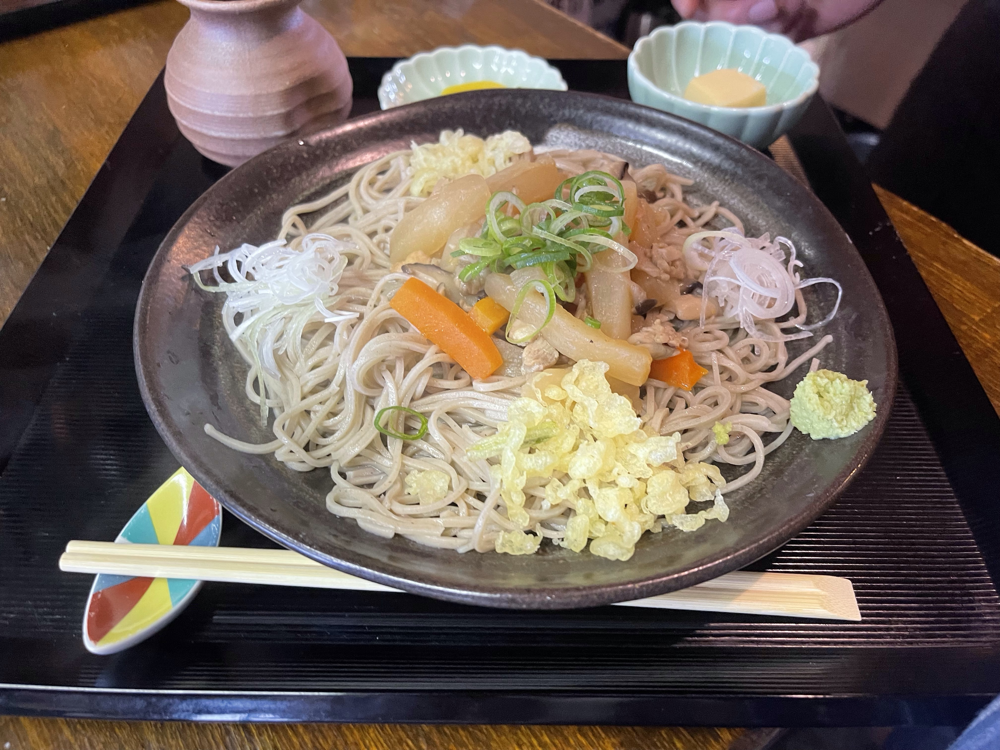
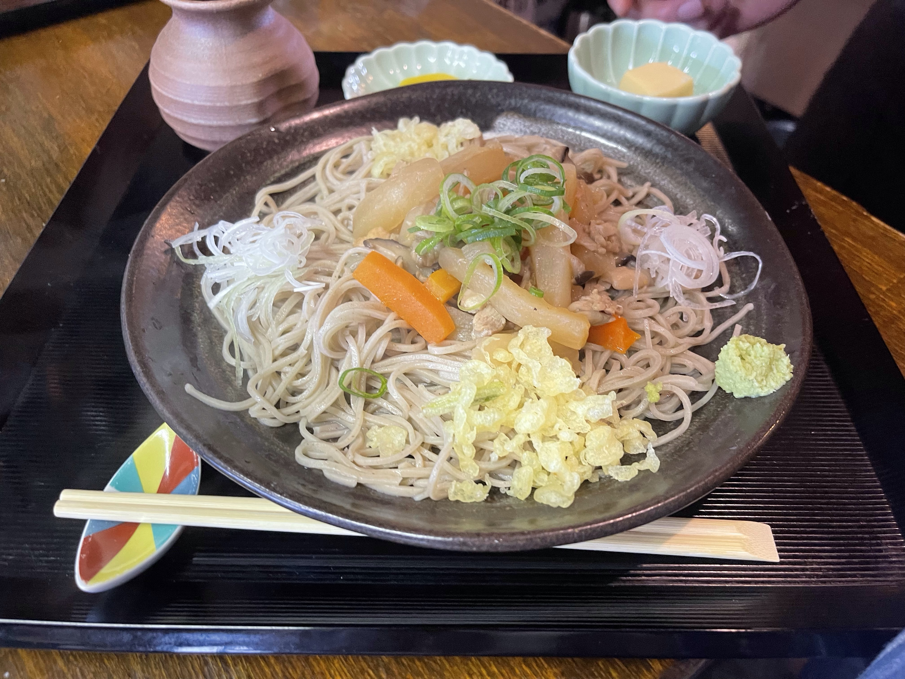

蕎麦処いろは
軽井沢・佐久市中込にある「蕎麦処いろは」では、手打ちの蕎麦を提供しています。
店舗情報
- 住所: 長野県佐久市中込2834-1
- 電話番号: 0267-62-5101
- 営業時間: 11:00 - 14:00、17:00 - 20:00
ご予約: 事前にお電話でのご予約をお願い致します。
 

軽井沢・佐久市中込にある「蕎麦処いろは」では、手打ちの蕎麦を提供しています。
ご予約: 事前にお電話でのご予約をお願い致します。